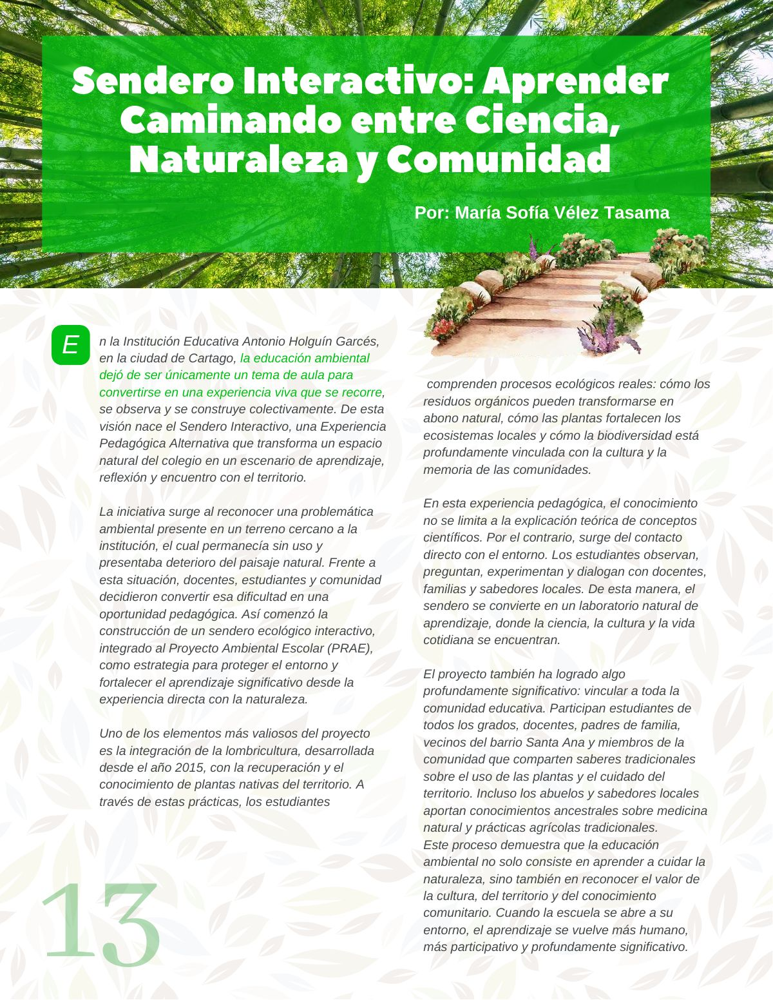
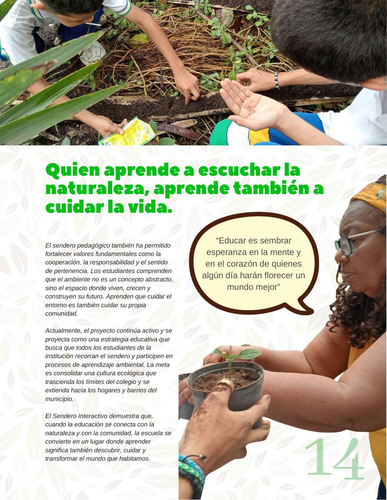

Sendero interactivo: aprender caminando entre ciencia, naturaleza y comunidad
Un sendero donde la ciencia, la cultura y la naturaleza se encuentran para enseñar a cuidar el territorio y la vida.
PDF · 2 págs. · 808 KBEn la Institución Educativa Antonio Holguín Garcés, en la ciudad de Cartago, la educación ambiental dejó de ser únicamente un tema de aula para convertirse en una experiencia viva que se recorre, se observa y se construye colectivamente. De esta visión nace el Sendero Interactivo, una Experiencia Pedagógica Alternativa que transforma un espacio natural del colegio en un escenario de aprendizaje, reflexión y encuentro con el territorio.
La iniciativa surge al reconocer una problemática ambiental presente en un terreno cercano a la institución, el cual permanecía sin uso y presentaba deterioro del paisaje natural. Frente a esta situación, docentes, estudiantes y comunidad decidieron convertir esa dificultad en una oportunidad pedagógica. Así comenzó la construcción de un sendero ecológico interactivo, integrado al Proyecto Ambiental Escolar (PRAE), como estrategia para proteger el entorno y fortalecer el aprendizaje significativo desde la experiencia directa con la naturaleza.
Uno de los elementos más valiosos del proyecto es la integración de la lombricultura, desarrollada desde el año 2015, con la recuperación y el conocimiento de plantas nativas del territorio. A través de estas prácticas, los estudiantes comprenden procesos ecológicos reales: cómo los residuos orgánicos pueden transformarse en abono natural, cómo las plantas fortalecen los ecosistemas locales y cómo la biodiversidad está profundamente vinculada con la cultura y la memoria de las comunidades.
En esta experiencia pedagógica, el conocimiento no se limita a la explicación teórica de conceptos científicos. Por el contrario, surge del contacto directo con el entorno. Los estudiantes observan, preguntan, experimentan y dialogan con docentes, familias y sabedores locales. De esta manera, el sendero se convierte en un laboratorio natural de aprendizaje, donde la ciencia, la cultura y la vida cotidiana se encuentran.
El proyecto también ha logrado algo profundamente significativo: vincular a toda la comunidad educativa. Participan estudiantes de todos los grados, docentes, padres de familia, vecinos del barrio Santa Ana y miembros de la comunidad que comparten saberes tradicionales sobre el uso de las plantas y el cuidado del territorio. Incluso los abuelos y sabedores locales aportan conocimientos ancestrales sobre medicina natural y prácticas agrícolas tradicionales.
Este proceso demuestra que la educación ambiental no solo consiste en aprender a cuidar la naturaleza, sino también en reconocer el valor de la cultura, del territorio y del conocimiento comunitario. Cuando la escuela se abre a su entorno, el aprendizaje se vuelve más humano, más participativo y profundamente significativo.
Quien aprende a escuchar la naturaleza, aprende también a cuidar la vida.
El sendero pedagógico también ha permitido fortalecer valores fundamentales como la cooperación, la responsabilidad y el sentido de pertenencia. Los estudiantes comprenden que el ambiente no es un concepto abstracto, sino el espacio donde viven, crecen y construyen su futuro. Aprenden que cuidar el entorno es también cuidar su propia comunidad.
“Educar es sembrar esperanza en la mente y en el corazón de quienes algún día harán florecer un mundo mejor”
Actualmente, el proyecto continúa activo y se proyecta como una estrategia educativa que busca que todos los estudiantes de la institución recorran el sendero y participen en procesos de aprendizaje ambiental. La meta es consolidar una cultura ecológica que trascienda los límites del colegio y se extienda hacia los hogares y barrios del municipio.
El Sendero Interactivo demuestra que, cuando la educación se conecta con la naturaleza y con la comunidad, la escuela se convierte en un lugar donde aprender significa también descubrir, cuidar y transformar el mundo que habitamos.
Así se ve en la revista
2 páginas
